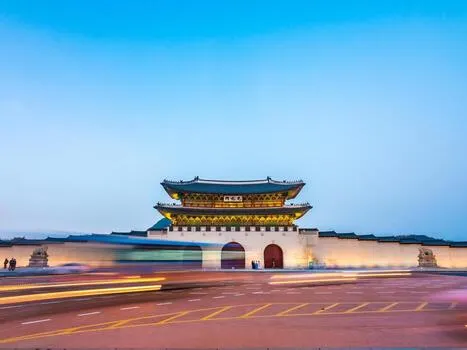
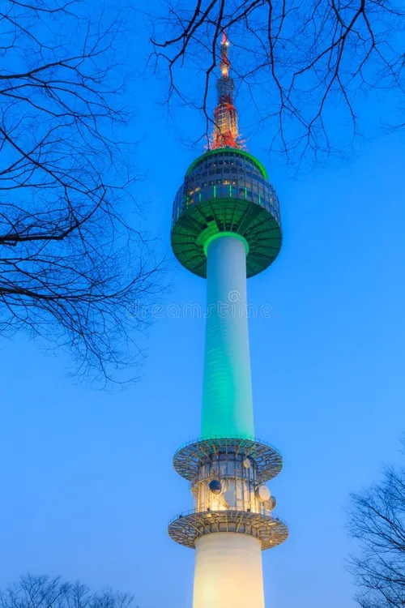
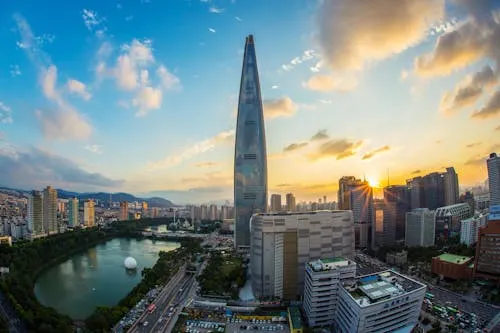
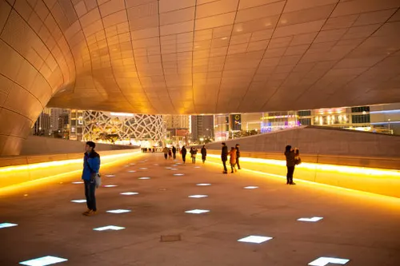

learnmoreaboutsk.ca
Return to Front Page
Gyeongbokgung Palace

Transportation: Gyeongbokgung Station Open Hours: 9AM-5PM (closed every Tuesday) Fee: Around 3000KRW for adults History: The Gyeongbokgung Palace was the first and largest palace built during the Joseon dynasty, with the name meaning, the "Palace Greatly Blessed by Heaven."
N Seoul Tower

Transportation: Namsan Cable car, found near Myeongdong Station Open Hours: 10AM-11PM, or 12AM on the weekends Fee: Around 16000KRW History: Built in 1969 as South Korea's first broadcasting tower, before being opened to the public in 1980.
Lotte World Tower

Transportation: Jamsil Station Open Hours: 10:30AM-10PM Fee: Around 27000KRW History: It is the tallest tower in South Korea, and fun fact the design was inspired by traditional Korean ceramics and calligraphy brushes.
Dongdaemun Design Plaza

Transportation: Dongdaemun History and Culture Park Station Open Hours: 24/7 Fee: Free until arriving to the exhibitions History: World's largest non-standard building, characterized by its fluid, abnormal shapes with no parallel lines.
Cheonggyecheon Stream
Transportation: Gwanghwamun Station or City Hall Station Open Hours: 24/7 Fee: Free History: In 1958 to 2005, the stream was sealed with a concrete highway, until its restoration took place as one of Seoul's greatest renewal and nature free success.
Bukhansan National Park
Transportation: Bukhansan Ui Station Open Hours: Open year-round, but closed only during heavy snow or high fire danger Fee: Free entry to park, but some temples require a small donation History: The park is often called the "lungs of Seoul" as it is the only park located within the city of Seoul.
Jeju Island
Transportation: Flight from Seoul Gimpo to Jeju or ferry from Seoul Open Hours: 24/7 Fee: Depends History: The island is protected and approved by UNESCO World Heritage site, because of it's the volcanic history.
Nami Island
Transportation: ITX train to Gapyeong Station, then to Gapyeon City and take taxi, ferry terminal, or tour bus Open Hours: 24/7 Fee: 16000KRW History: Nami Island was originally a small nation called the Naminara Republic, with its own flag, and economy.